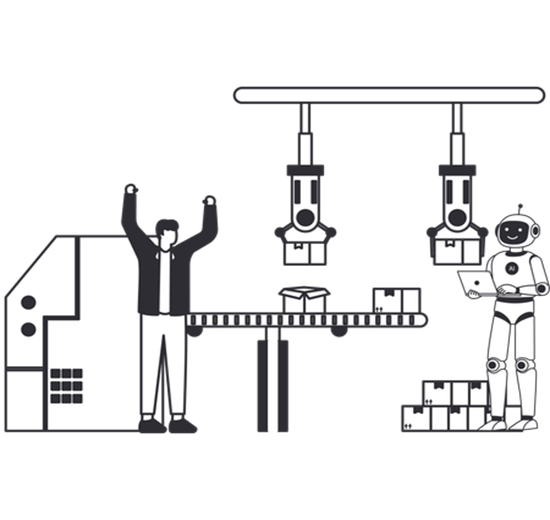

Conceitos teóricos importantes da automação e dos produtos HI Tecnologia
Nesta etapa você deverá ler as documentações para criar uma base teórica sobre conceitos da automação industrial e dos produtos comercializados pela HI Tecnologia e responder a prova baseada nos conteúdos. Não se esqueça de salvar os arquivos das aulas em pastas individuais para cada tema, na sua pasta localizada em: L:\GAdmn\DSuporte Tecnico\Minha Pasta.

Leia os documentos:
Responda a prova utilizando como base os conteúdos estudados nos documentos anteriores:
Acessar Prova